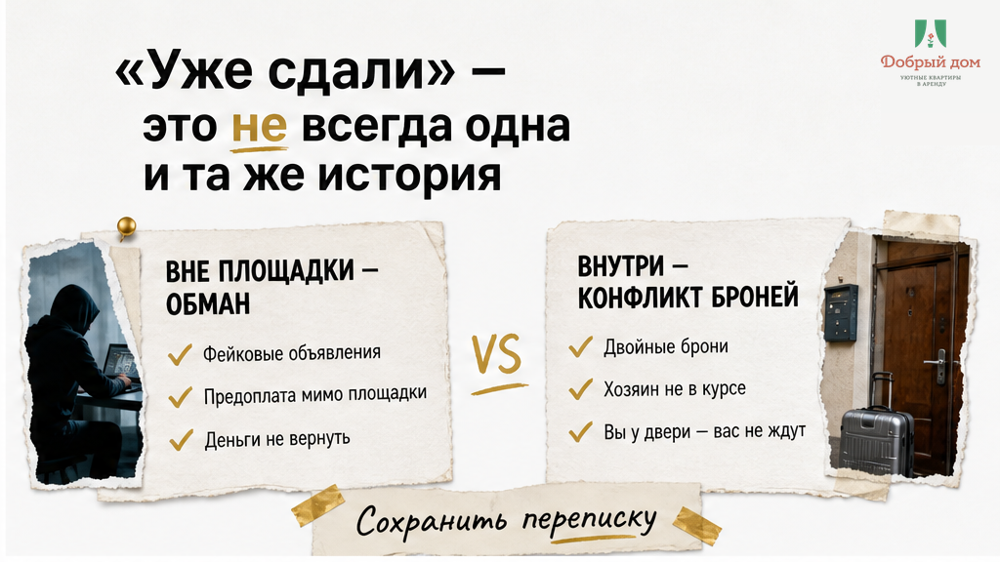
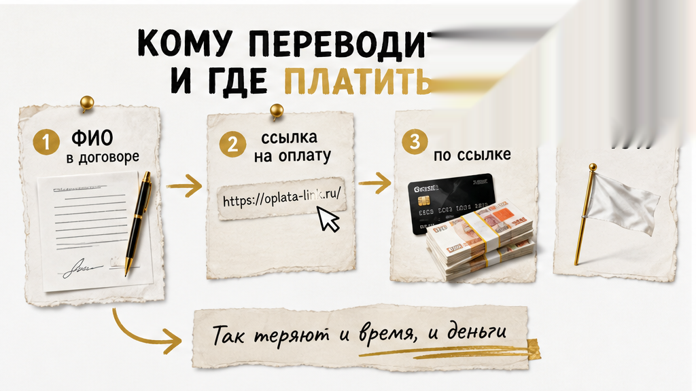
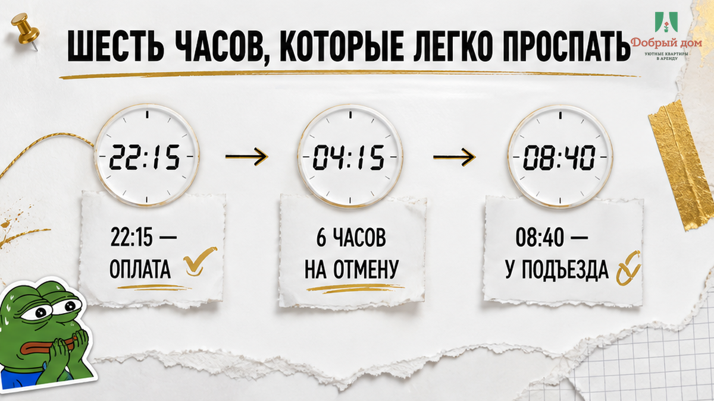
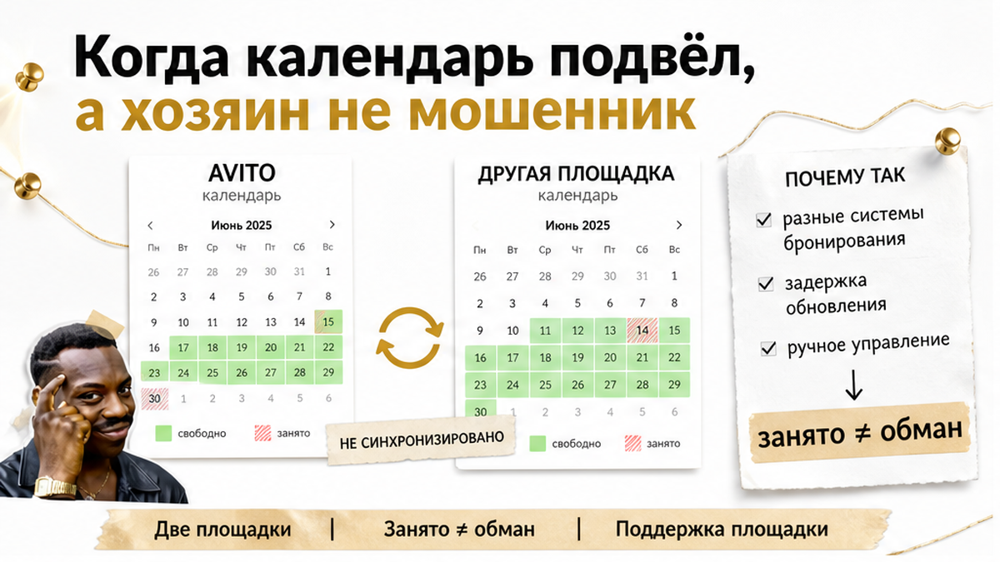
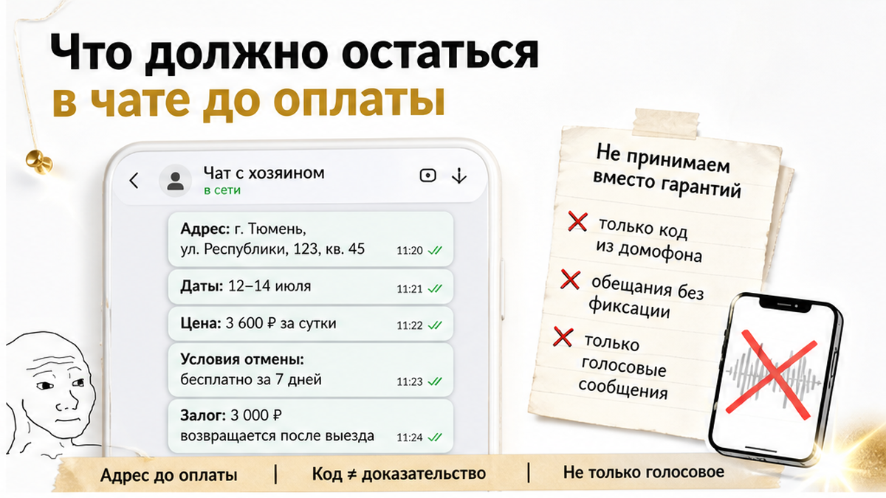
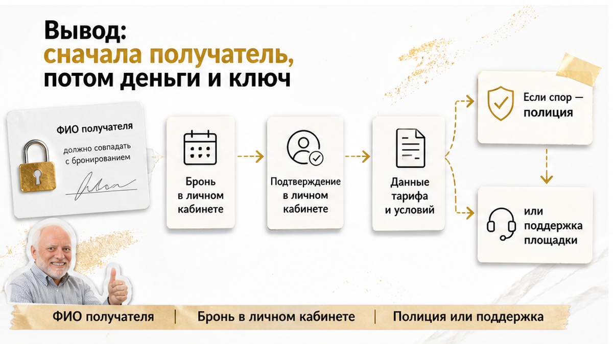
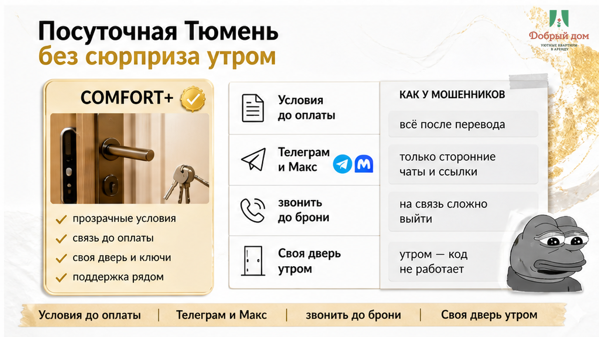

28 августа, 22:15. Гость едет в Тюмень утренним поездом, до заезда десять часов. Вечером он нашёл квартиру на две ночи: цена примерно на 15% ниже похожих вариантов, в переписке его торопят — «есть ещё трое желающих, держу до полуночи». Ссылку «для бронирования» присылают прямо в чат. Он вводит данные карты, деньги списываются, а в ответ приходит картинка «бронь подтверждена». В 08:40 гость стоит у подъезда: в квартире живут другие люди, объявление удалено, номер не отвечает. В похожем случае, о котором писал ProOren, у потерпевшей после такой ссылки списали 20 000 ₽, а затем по второй ссылке попросили оставить на карте ещё столько же — якобы «для возврата». Возбудили уголовное дело о мошенничестве.
А теперь тот же вечер — 22:15, та же спешка, а утром та же фраза: «Извините, уже сдали». Только здесь гость платил внутри площадки, бронь была настоящей, хозяин существовал и не исчезал. Квартира одновременно висела на другом сервисе, календари не синхронизировались, и даты закрылись там раньше. Гостю предложили альтернативу, но часть суммы без потерь вернуть не получилось: шесть часов бесплатной отмены уже прошли. Одна утренняя фраза — а дальше два разных маршрута: в одном случае поддержка сервиса, в другом полиция.
Я хост посуточной в Тюмени. Это «Добрый дом». В конце августа каждое утро в Telegram и MAX приходят люди, которые накануне уже кому-то заплатили. Не за нашу квартиру. Просто им нужно жильё сегодня, а свободных денег больше нет.

Сначала определите, что именно случилось. От этого зависит, кому писать в 08:40 и какие документы сохранять.
Если платили вне площадки, это может быть мошенничество. Вас попросили перевести деньги на карту или перейти по ссылке, где нужно ввести реквизиты. После оплаты объявление исчезает, адрес оказывается фиктивным, а по указанному адресу живут другие люди. Госуслуги отдельно называют знаком опасности цену ниже рынка, фотографии из чужих объявлений, требование полной предоплаты и поддельный сайт бронирования. В такой схеме нет двойной брони. Брони вообще нет.
Сохраняйте переписку, адрес страницы, ссылку, чеки об оплате и номер, с которого вам писали. Если деньги ушли постороннему человеку, обращайтесь в полицию. Не тратьте утро на уговоры того, кто уже удалил объявление.
Если платили внутри площадки, это может быть конфликт бронирований. Вы оплатили заказ, бронь отображалась, хозяин настоящий, но квартира параллельно сдавалась на другом сервисе. Календари не сошлись, свободные даты оказались занятыми, заселение не состоялось. Это неприятно и может стоить части суммы, но автоматически мошенничеством не становится.
Разница не в том, насколько вам обидно. Разница в том, где лежат деньги. В первом случае они уже ушли на чужую карту. Во втором — находятся внутри сервиса, где есть поддержка и правила отмены.

Перед оплатой нужны три коротких ответа: кому уходят деньги, где проходит платёж и что именно подтверждает бронь.
Кому. ФИО получателя должны совпадать с человеком, указанным в договоре или профиле на площадке. «Переведите сестре», «это карта мужа», «я потом всё оформлю» — не мелкие бытовые детали. Это повод остановиться и задать ещё вопросы.
Где. Безопаснее, когда оплата проходит внутри заказа на площадке. Ссылка из чата, форма с просьбой ввести номер карты и обещание «так дешевле, потому что без комиссии» — совсем другой маршрут. Именно по ссылке для бронирования в похожем случае со счёта списали 20 000 ₽.
За что. Мошенники могут просить деньги не только за бронь, но и за просмотр. Перед учебным годом копируются объявления рядом с вузами, цена ставится на 15–20% ниже похожих вариантов, а в переписке появляются «десятки претендентов». Спешка здесь не случайность. Она нужна, чтобы вы не успели проверить получателя и саму бронь.
Если договариваетесь напрямую, до перевода зафиксируйте адрес, даты, цену, правила отмены и договор найма. Уточните, как названа сумма: аванс и задаток — не одно и то же. Если вам предлагают полную предоплату без договора, попросите видеозвонок, на котором собственник покажет лицо и паспорт. Неловко попросить? Да. Но поезд в Тюмень без квартиры обойдётся дороже.

При оплате внутри Авито время тоже имеет цену. По условиям площадки предоплата уходит арендодателю после фактического заселения. Но бесплатная отмена действует в течение 6 часов после оплаты. Исключение — бронь день в день: при ней предоплата не возвращается.
Случай, когда в забронированном жилье уже живут другие люди, прямо относится к обращениям за возвратом или заменой. Поэтому важна не только сумма, но и часы. Оплатили в 22:15 — шесть часов заканчиваются в 04:15. В 08:40 вы впервые увидели чужих жильцов, а окно бесплатной отмены уже закрыто. Дальше всё зависит от выбранного тарифа и того, как быстро вы написали в поддержку.
Перевод на карту «со скидкой» — это нормальная экономия или красный флаг? Я отвечаю: красный флаг. Если хотите поспорить, напишите в MAX — max.ru/id660300569233_biz. Но сначала проверьте, где появляется бронь: в личном кабинете или только в картинке из чата.

Представьте обычную ситуацию. На одной площадке даты выглядят свободными, гость оплачивает две ночи, а хозяин в этот момент уже подтвердил другого человека на другом сервисе. Календари не синхронизировались. Утром хозяин сообщает, что квартира занята, и предлагает другой вариант.
Обидно — безусловно. Но это не та же история, что поддельная ссылка. Если вы платили внутри сервиса реальному владельцу, не называйте ситуацию мошенничеством автоматически. Поддержке нужна точная формулировка: «Заселение не состоялось, даты были показаны свободными, прошу возврат или замену». Так сотруднику проще увидеть именно конфликт брони, а не искать признаки кражи данных.
Обещать возврат в каждом случае нельзя. Результат зависит от того, где вы платили, какой тариф выбрали и как быстро сообщили о проблеме. Но при оплате внутри площадки у вас хотя бы остаётся канал, по которому можно зафиксировать срыв заселения.

Переписка нужна не «на всякий случай». Утром она отвечает за вас, когда объявление уже исчезло или участники разговора по-разному помнят условия.
До перевода зафиксируйте текстом адрес, даты, цену, время заезда и правила отмены. Не только голосовым сообщением и не фразой «как договорились». Отдельно уточните, кто встречает, как попасть внутрь и откуда придёт код, если заселение бесконтактное.
Код от двери сам по себе не доказывает, что квартира ваша. В одной из историй гость оплатил жильё посуточно, а код прислали от чужой двери — оплатил квартиру посуточно, а код прислали от чужой двери. С залогом тоже лучше договориться заранее: сумма, повод удержания и порядок возврата должны быть понятны до приезда. Иначе после выезда может появиться «скол на плите», как в истории о залоге, который не вернули.
Если едете в Тюмень к первому сентября, отдельно проверьте расстояние до нужного корпуса — в подборке квартир посуточно рядом с вузом «рядом» иногда превращается в 40 минут пешком. Это уже другая история, но тот же принцип: уточнять нужно до оплаты, а не у подъезда.

Мораль этого вечера простая: сначала выясните, кто получает деньги, где проходит оплата и что подтверждает бронь. Только потом передавайте деньги и ждите ключ. Не наоборот, даже если вам пишут «держу до полуночи».
Проверьте один замок, который чаще всего открывает всю историю: где подтверждение брони — в личном кабинете или только скрин в чате? Картинку можно сделать за минуту. Запись в заказах — нет.
Перед оплатой пройдите этот список:

В «Добром доме» мы фиксируем условия до передачи денег: адрес, даты, цену, время заезда и порядок отмены. Вопросы про парковку, документы для отчёта, маршрут до нужного корпуса и способ заселения можно задать заранее. Нам спокойнее, когда гость понимает условия до оплаты, а не пытается восстановить их утром по памяти.
Если проверяете любое объявление и сомневаетесь в получателе, ссылке или условиях, спросите менеджера прямо. Можно написать в Telegram: t.me/Dobriy_dom_Tyumen.
Посмотреть варианты и задать вопросы можно в Telegram: t.me/Dobriy_dom_72, а также в MAX: max.ru/id660300569233_biz. Квартиры «Доброго дома» — на сайте добрыйдом-72.рф, онлайн-бронирование — добрыйдом-72.рф/booking/.
Нужны даты, подсказка по району или помощь менеджера — звоните: +7 (993) 574-83-22. Условия брони фиксируем до оплаты, чтобы утром вы открывали дверь своей квартиры, а не чужого подъезда.